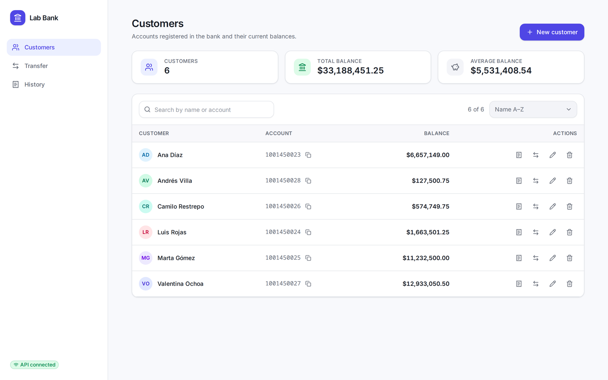
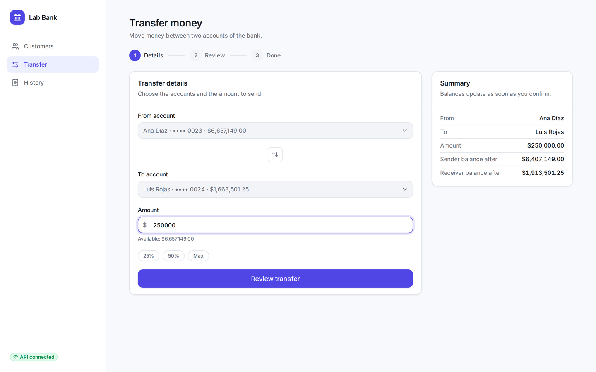
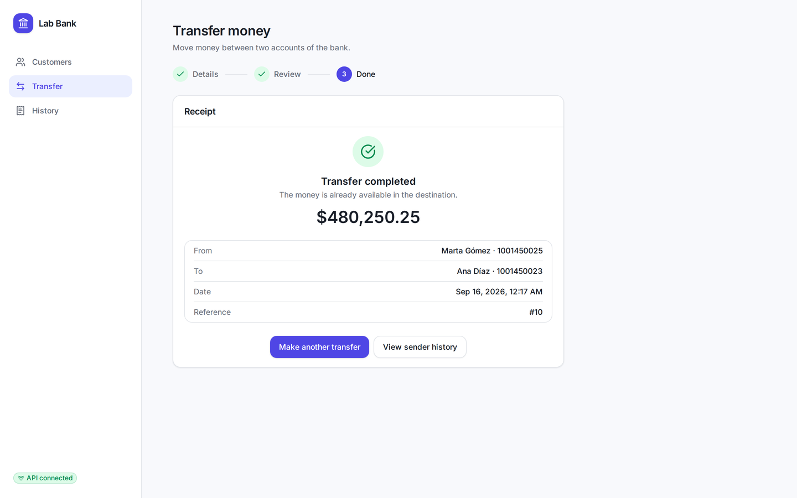
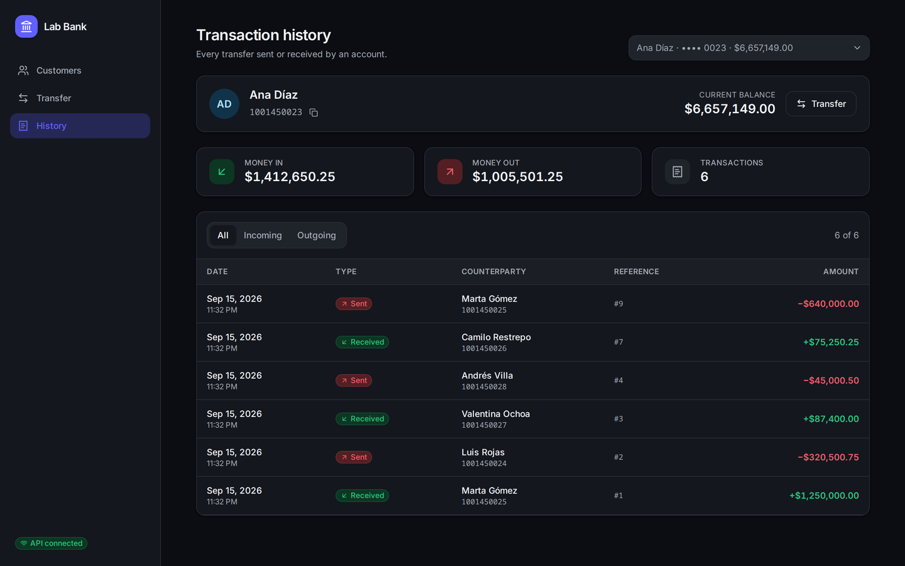
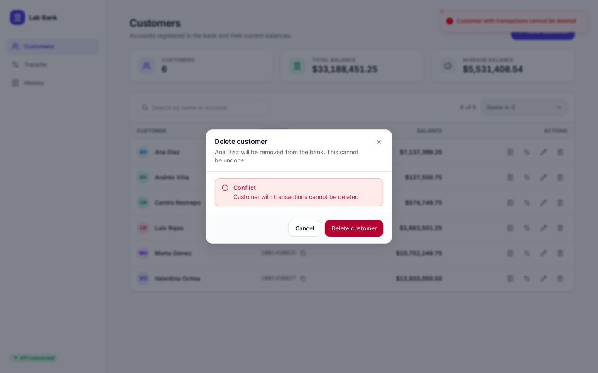
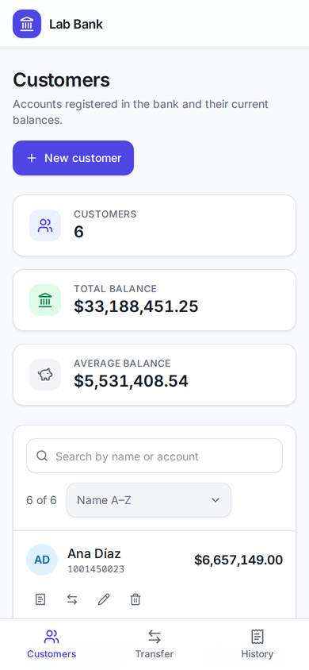

Desarrollo de un frontend en React que consume los servicios REST de una aplicación Spring Boot con persistencia en MySQL.
El laboratorio plantea la construcción de una aplicación que simula las operaciones básicas de un banco: registrar clientes, transferir dinero entre cuentas y consultar el histórico de movimientos. El punto de partida fue el proyecto base entregado por el docente, que contenía la API REST en Spring Boot con su arquitectura por capas, y el ejercicio de entrega obligatoria consistía en desarrollar un frontend que consumiera las rutas definidas en los controladores, con al menos tres vistas: consulta de clientes, transferencia de dinero y tabla del histórico de transacciones por cliente.
El trabajo realizado va un paso más allá del mínimo solicitado. Antes de escribir la primera línea del cliente web se ejercitó la API existente con peticiones reales, lo que permitió detectar defectos funcionales de fondo: el más grave permitía enviar un monto negativo y, en consecuencia, transferir dinero en sentido contrario al solicitado. Por esa razón el informe documenta tanto la construcción del frontend como la corrección de las reglas de negocio que lo sustentan, ya que una interfaz solo puede ser confiable si el servicio que consume también lo es.
El resultado es una aplicación completa y verificada extremo a extremo: base de datos MySQL en contenedor, API REST con validación y manejo uniforme de errores, y un cliente web en React que consume esos servicios mediante Axios. Todo el proceso quedó versionado en un repositorio público con issues, ramas, pull requests e integración continua.
Desarrollar un cliente web que consuma los servicios REST de la aplicación bancaria construida con Spring Boot, garantizando la comunicación efectiva entre las tres capas del sistema —interfaz de usuario, servicios de negocio y base de datos— y aplicando principios de arquitectura por capas, usabilidad y control de versiones.
La selección de herramientas respeta las indicadas en la guía del laboratorio —Spring Boot, JDK 17, Maven, NodeJS, React y Axios— y las complementa con librerías de uso extendido en la industria para el manejo de estado del servidor, la validación de formularios y las pruebas automatizadas.
| Herramienta | Versión | Función en el proyecto |
|---|---|---|
| Java (JDK) | 17 | Lenguaje y plataforma de ejecución; el desarrollo se realizó sobre JDK 21 compilando para 17. |
| Spring Boot | 3.5.11 | Framework base: Web MVC, Data JPA, Validation y DevTools. |
| Hibernate / JPA | incluida | Mapeo objeto-relacional y generación automática del esquema. |
| MySQL Connector/J | incluida | Controlador JDBC para la conexión con la base de datos. |
| MapStruct | 1.5.5.Final | Generación en tiempo de compilación de los mapeadores entre entidades y DTO. |
| Lombok | 1.18.42 | Reducción de código repetitivo (se conserva del proyecto base). |
| Maven Wrapper | 3.9.12 | Construcción del proyecto sin depender de una instalación local de Maven. |
| JUnit 5, Mockito, MockMvc | incluidas | Pruebas unitarias de servicios y pruebas de los controladores REST. |
| Herramienta | Versión | Función en el proyecto |
|---|---|---|
| Node.js | 22.23 | Entorno de ejecución para las herramientas de desarrollo. |
| React | 19.2 | Librería para la construcción de la interfaz por componentes. |
| TypeScript | 6.0 | Tipado estático sobre JavaScript; previene errores en tiempo de compilación. |
| Vite | 8.3 | Servidor de desarrollo y empaquetado para producción. |
| Axios | 1.20 | Cliente HTTP para consumir la API REST. |
| TanStack Query | 5.102 | Gestión del estado del servidor: caché, recarga e invalidación tras cada operación. |
| React Router | 8.4 | Enrutamiento entre las vistas y estado compartido en la URL. |
| Tailwind CSS | 4.3 | Sistema de estilos utilitario; base del tema claro y oscuro. |
| React Hook Form + Zod | 7.88 / 4.6 | Manejo y validación de formularios en el cliente. |
| Vitest, Testing Library, MSW | 5.0 / 16.3 / 2.15 | Pruebas automatizadas de la interfaz simulando la API a nivel de red. |
| Herramienta | Versión | Función en el proyecto |
|---|---|---|
| MySQL | 8.4 | Base de datos relacional, ejecutada en contenedor. |
| Podman + Compose | 5.8 | Provisión reproducible de la base de datos mediante compose.yaml. |
| Git y GitHub | — | Control de versiones, issues, pull requests y publicación de la entrega. |
| GitHub Actions | — | Integración continua: pruebas del backend y del frontend en cada cambio. |
| Playwright | — | Verificación del flujo completo en un navegador real y captura de evidencias. |
| oxlint y Prettier | — | Análisis estático y formato uniforme del código del cliente web. |
El sistema adopta una arquitectura cliente-servidor de tres niveles, en la que cada nivel tiene una responsabilidad única y se comunica con el siguiente a través de un contrato explícito. El navegador ejecuta una aplicación de página única que nunca accede a la base de datos: toda operación se solicita a la API mediante HTTP con mensajes en formato JSON, y solo el servidor conoce las reglas de negocio y la persistencia.
El backend conserva la arquitectura por capas propuesta en la guía del laboratorio, con una responsabilidad clara en cada una:
| Capa | Responsabilidad |
|---|---|
| controller | Expone las rutas HTTP, valida el cuerpo de las peticiones y traduce el resultado a un código de estado. |
| service | Contiene las reglas de negocio y delimita la transacción de base de datos. |
| repository | Acceso a datos mediante Spring Data JPA, con consultas derivadas del nombre del método. |
| entity | Entidades JPA que representan las tablas customers y transaction. |
| dto + mapper | Objetos de transferencia y mapeadores MapStruct; evitan exponer las entidades del dominio. |
| exception | Excepciones de dominio y manejador global que las convierte en respuestas de error uniformes. |
El frontend replica esa separación de responsabilidades con una organización por funcionalidad: cada una de las tres áreas del negocio —customers, transfers y transactions— agrupa su propio acceso a la API, su modelo, sus componentes y sus páginas. Los elementos visuales reutilizables (botones, campos, tablas, diálogos y estados de carga, vacío y error) residen en un módulo compartido que actúa como sistema de diseño.
Se aplica además el patrón contenedor-presentación: las páginas obtienen los datos y coordinan las operaciones, mientras que los componentes solo reciben propiedades y emiten eventos. Esto mantiene la lógica concentrada en pocos archivos y permite probar los componentes de forma aislada.
POST /api/transactions con las dos cuentas y el monto.400 indicando el campo afectado.201 devuelve el comprobante; el cliente invalida su caché para que los saldos y el histórico se actualicen de inmediato en todas las vistas.application/problem+json), con un mensaje legible y, en los errores de validación, el detalle por campo. Gracias a ello la interfaz muestra el mensaje junto al campo que lo origina.El desarrollo se organizó en fases; cada una corresponde a un issue en el repositorio y se integró a la rama principal mediante un pull request con su respectiva verificación.
Se creó un fork del repositorio base del docente, con lo que se conserva el commit inicial y la trazabilidad respecto al proyecto original. Sobre el fork se definieron ocho issues —uno por unidad de trabajo—, un hito de entrega y un flujo de trabajo basado en ramas nombradas por tipo (feat/, fix/, build/, docs/), commits con formato Conventional Commits y pull requests que cierran su issue.
Se añadió un archivo compose.yaml que levanta MySQL 8.4 con comprobación de salud, y se parametrizó la conexión mediante variables de entorno. Adicionalmente se corrigieron dos conflictos de dependencias del proyecto base: la versión de jackson-databind fijada manualmente (2.15.0) convivía con los demás artefactos de Jackson gestionados por Spring Boot (2.19.4), y la versión de Lombok declarada no compila en JDK recientes. Al delegar ambas versiones a Spring Boot, el proyecto compila y arranca sin advertencias.
Antes de construir el cliente se ejercitaron los endpoints con peticiones reales contra la base de datos. La prueba consistió en crear dos clientes con saldos conocidos y ejecutar transferencias con valores límite. El resultado más relevante fue el siguiente:
POST /api/transactions
{"senderAccountNumber":"1001","receiverAccountNumber":"1002","amount":-50}
Respuesta: 200 OK
Saldos antes: 1001 = 500.00 1002 = 100.00
Saldos después: 1001 = 550.00 1002 = 50.00
Es decir, un monto negativo invertía el sentido de la operación y permitía extraer dinero de la cuenta destino. El diagnóstico reveló además otros defectos, resumidos en la tabla siguiente.
| Situación | Comportamiento original | Comportamiento corregido |
|---|---|---|
| Monto negativo o nulo | 200 OK, invierte los saldos | 400 con el detalle del campo |
| Cuenta origen igual a la destino | Permitido | 422 con regla de negocio |
| Saldo insuficiente | 400 en texto plano | 422 en formato problem+json |
| Cliente inexistente | 500 Internal Server Error | 404 Not Found |
| Fecha del movimiento | La define el cliente | La asigna el servidor |
| Actualización de saldos | Tres escrituras independientes | Una transacción con bloqueo |
| Número de cuenta duplicado | 500 Internal Server Error | 409 Conflict |
Con el diagnóstico anterior se implementaron las correcciones y se añadieron los endpoints necesarios para la funcionalidad opcional del laboratorio. El contrato final de la API es el siguiente:
| Método | Ruta | Éxito | Errores |
|---|---|---|---|
| GET | /api/customers | 200 | — |
| GET | /api/customers/{id} | 200 | 404 |
| POST | /api/customers | 201 | 400, 409 |
| PUT | /api/customers/{id} | 200 | 400, 404 |
| DELETE | /api/customers/{id} | 204 | 404, 409 |
| POST | /api/transactions | 201 | 400, 404, 422 |
| GET | /api/transactions/{accountNumber} | 200 | 404 |
Un error de validación se comunica así, con el detalle por campo que la interfaz aprovecha para señalar la entrada incorrecta:
{
"type": "about:blank",
"title": "Validation failed",
"status": 400,
"detail": "One or more fields are invalid.",
"instance": "/api/customers",
"errors": { "accountNumber": "Account number must contain 4 to 20 digits" }
}
El cliente se construyó en cuatro incrementos: la base del proyecto con el sistema de diseño y el cliente HTTP, y luego una vista por entrega. Cada vista aplica los mismos principios de experiencia de usuario: estados visibles de carga, vacío y error; retroalimentación inmediata de cada acción; prevención de errores antes de enviar la petición; y confirmación explícita de las operaciones irreversibles.




La funcionalidad opcional de actualización y eliminación de clientes respeta las reglas de integridad del servidor. Cuando se intenta eliminar un cliente que ya registra movimientos, la interfaz muestra el motivo devuelto por la API en lugar de fallar silenciosamente:


La verificación se realizó en tres niveles complementarios:
| Nivel | Resultado | Alcance |
|---|---|---|
| Pruebas del backend | 30 pruebas | Reglas de la transferencia, validación de clientes y traducción de errores a códigos HTTP. |
| Pruebas del frontend | 50 pruebas | Cada vista con la API simulada a nivel de red: listados, validaciones, filtros y totales. |
| Flujo en navegador | Sin errores | Creación, edición, cuenta duplicada, eliminación con conflicto, transferencia completa e histórico, contra la base de datos real. |
La ejecución en navegador se automatizó con Playwright, registrando los errores de consola y las peticiones fallidas: ambos indicadores quedaron en cero. Las figuras de este informe corresponden a esa ejecución.
Finalmente se redactó el archivo README.md con la guía de instalación, el diagrama de arquitectura, la referencia de la API y la tabla de variables de entorno; y se configuró un flujo de integración continua en GitHub Actions que, ante cada cambio, ejecuta las pruebas del backend contra una instancia de MySQL y el análisis estático, la verificación de tipos, las pruebas y la compilación del frontend. La entrega se publicó con la etiqueta v1.0.0.
BigDecimal en la base de datos en lugar de coma flotante, incorporar autenticación y autorización, y documentar la API con OpenAPI/Swagger.El proyecto completo —API, cliente web, documentación e integración continua— se encuentra publicado en el siguiente repositorio, creado como fork del proyecto base del curso:
Requisitos: JDK 17 o superior, Node.js 20.19 o superior y Docker o Podman.
# 1. Base de datos podman compose up -d # 2. API REST -> http://localhost:8080 ./mvnw spring-boot:run # 3. Cliente web -> http://localhost:5173 cd frontend && npm install && npm run dev
. ├── compose.yaml Servicio MySQL para desarrollo local ├── src/main/java/... API REST en Spring Boot ├── frontend/ Cliente web en React │ └── src/ │ ├── app/ proveedores, enrutamiento y layout │ ├── features/ customers, transfers, transactions │ └── shared/ cliente HTTP, sistema de diseño, utilidades ├── docs/ Informe y evidencias gráficas └── .github/workflows/ci.yml Integración continua
| Elemento | Detalle |
|---|---|
| Issues | 8, todos cerrados mediante su pull request correspondiente. |
| Pull requests integrados | 9, cada uno con resumen, ruta de revisión y evidencia de verificación. |
| Integración continua | Pruebas del backend con MySQL y verificación completa del frontend en cada cambio. |
| Publicación | Etiqueta y release v1.0.0 con las notas de la entrega. |